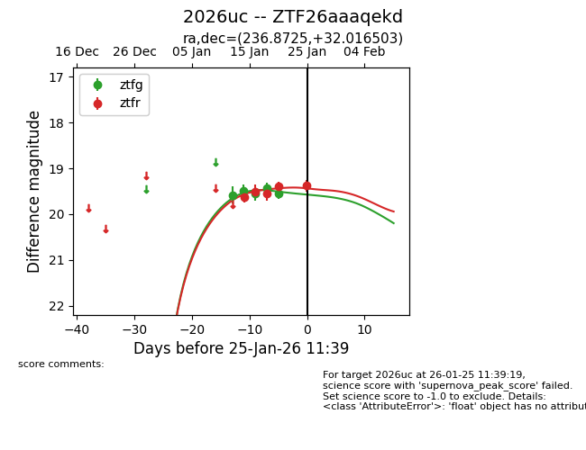
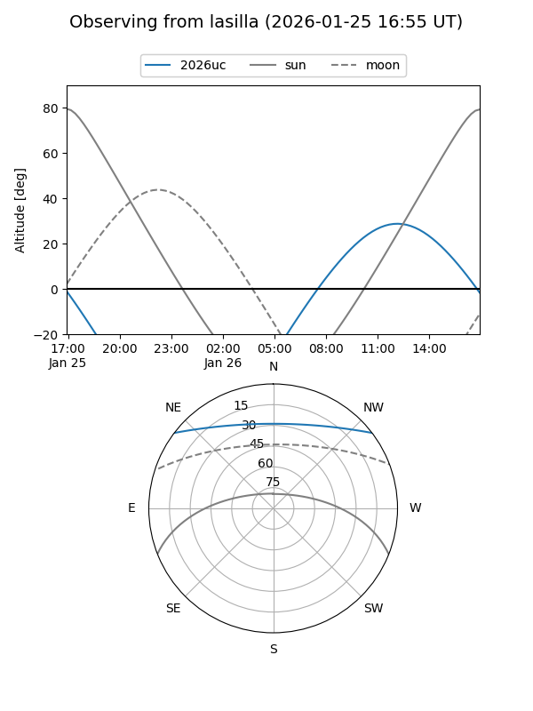
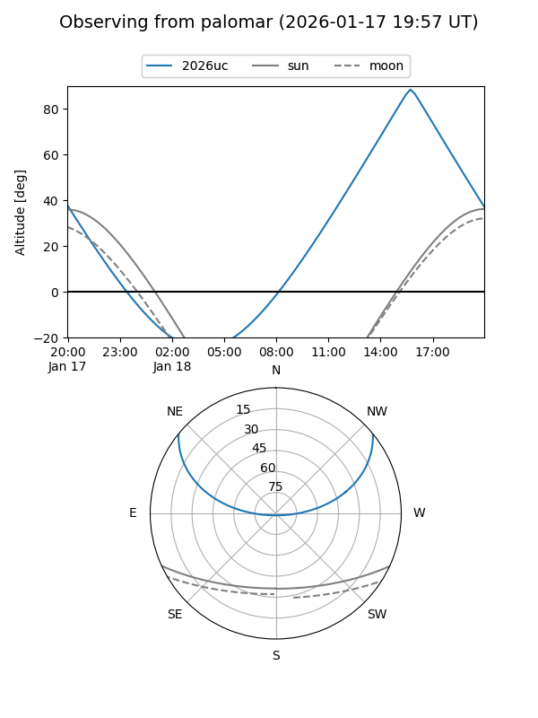
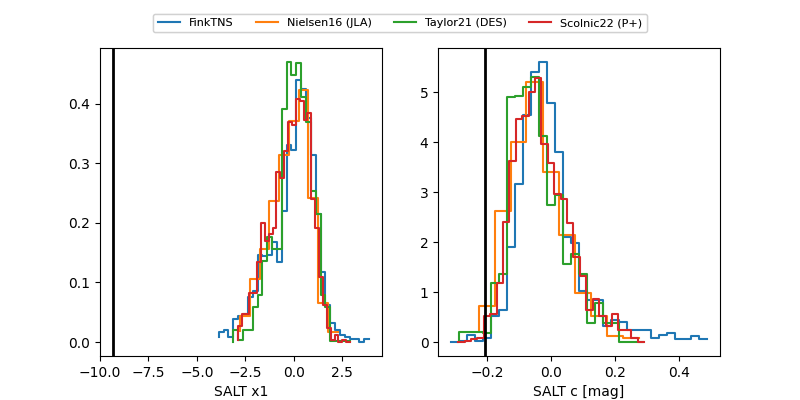

2026uc
Target 2026uc at 2026-01-18 13:35
Aliases and brokers:
FINK: link
Lasair: link
ALeRCE: link
TNS: link
YSE: link
alt names
ZTF26aaaqekd (ztf,fink_ztf)
2026uc (tns,yse)
Coordinates:
equatorial (ra, dec) = 236.8725,+32.01650
equatorial (HMS+DMS) = 15:47:29.40,+32:00:59.41
galactic (l, b) = (51.1395,+51.67008)
Flags:
Photometry:
last ztfg=19.56, ztfr=19.56
3 ztfg, 3 ztfr detections
Lightcurve

Visibility


Additional plots
